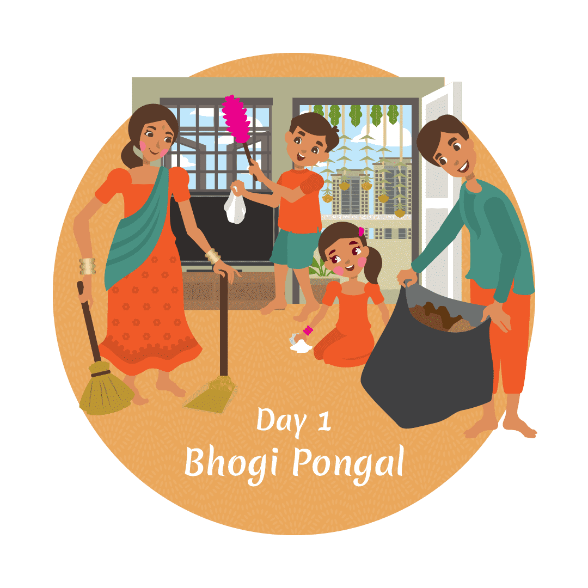
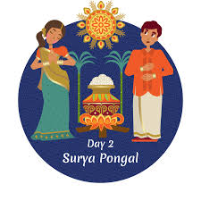
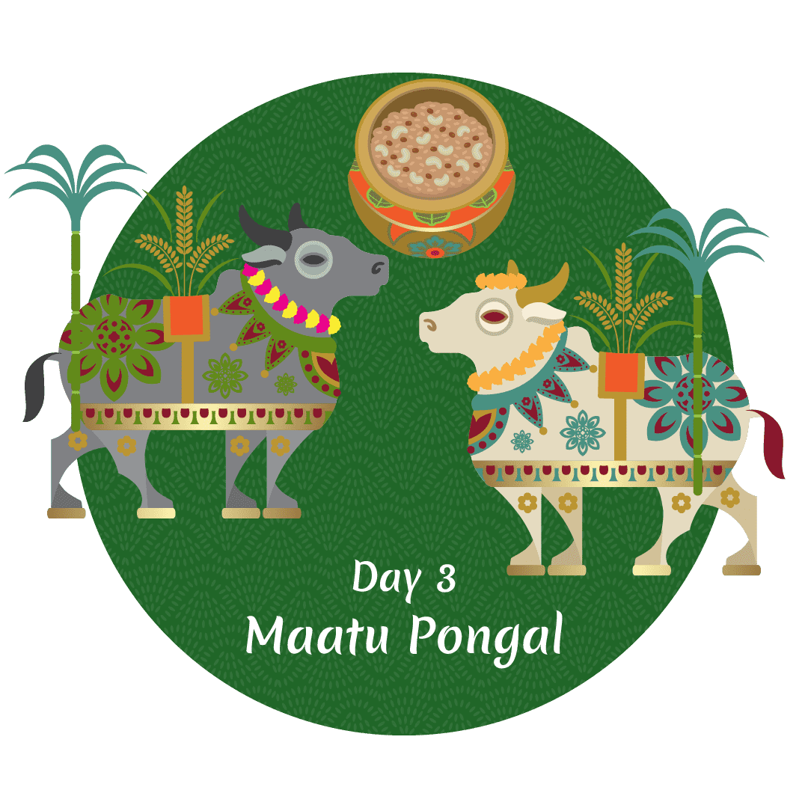
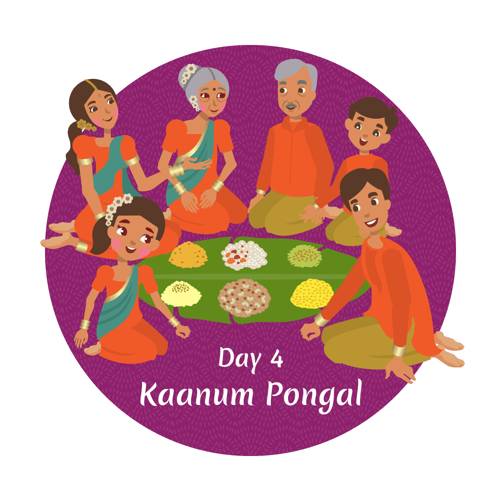

Pongal is a popular harvest festival celebrated by the Tamil community, especially in Tamil Nadu, India. It is dedicated to thanking the Sun God for a good harvest. The festival lasts for four days, each having its unique significance.
- Pongal is a festival celebrated to honor the Sun, nature, and farm animals.
- It marks the start of the Tamil month "Thai", which is considered auspicious.
- The festival typically falls on January 14th or 15th each year.
- Pongal is also a dish made of sweet boiled rice that is an integral part of the celebrations.
- The word "Pongal" comes from the Tamil word "pongu," meaning "to boil over."
Day 1: Bhogi Pongal

1. Bhogi marks the first day of Pongal.
2. It symbolizes a fresh start by cleaning and discarding old belongings.
3. People wear new clothes.
4. Homes are decorated to celebrate the festival.
Day 2: Surya Pongal

1. Surya Pongal is the second day and is celebrated as the main day of Pongal.
2. On this day, the Sun God is honored.
3. Decorative floor patterns (Kolam) are drawn in front of homes.
4. Milk is boiled over in pots, and the family celebrates by chanting "Pongalo Pongal!"
5. Special Pongal dishes are prepared for the feast.
Day 3: Mattu Pongal

1. Mattu Pongal is the third day of the festival.
2. It is dedicated to honoring cattle, especially cows.
3. Cattle are bathed and decorated with garlands.
4. In some places, thanksgiving prayers are held for cattle at dairy farms.
Day 4: Kaanum Pongal

1. Kaanum Pongal is the fourth day, focusing on family and community gatherings.
2. People share a meal together, strengthening family ties.
3. Younger members seek blessings from the elders.
4. Traditional folk dances like Mayilattam and Kolattam are performed.